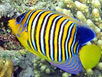

Рыбы бабочки
Рыбы бабочки (щетинозубые) имеют сильно сплющенное овальное тело, длинный спинной плавник вдоль всего тела. Пёстро окрашены. У маскированной бабочки маска тёмно синяя. У некоторых бабочек есть оранжевые и голубые цвета.
Бабочки ведут дневной образ жизни, и поэтому хорошо знакомы любителям плавать с маской. Я подозреваю, что ночные рыбы не такие красочные. Им это не нужно. Многие рыбы-бабочки всю жизнь держатся парами, но за икрой и мальками не ухаживают.
Большинство рыб-бабочек живут у коралловых рифов и рядом с кораллами на небольшой глубине. В зависимости от вида держатся одиночно, парами или стаями. Одиночки и пары защищают свой участок от вторжения конкурентов.
Из-за небольшого размера и яркой окраски рыбы-бабочки вполне подходят для домашнего морского аквариума. Однако они довольно требовательны к условиям, и поэтому их не рекомендуют начинающим аквариумистам. Рыб для аквариума привозят из южных морей, так как их сложно разводить в неволе.

Королевская бабочка